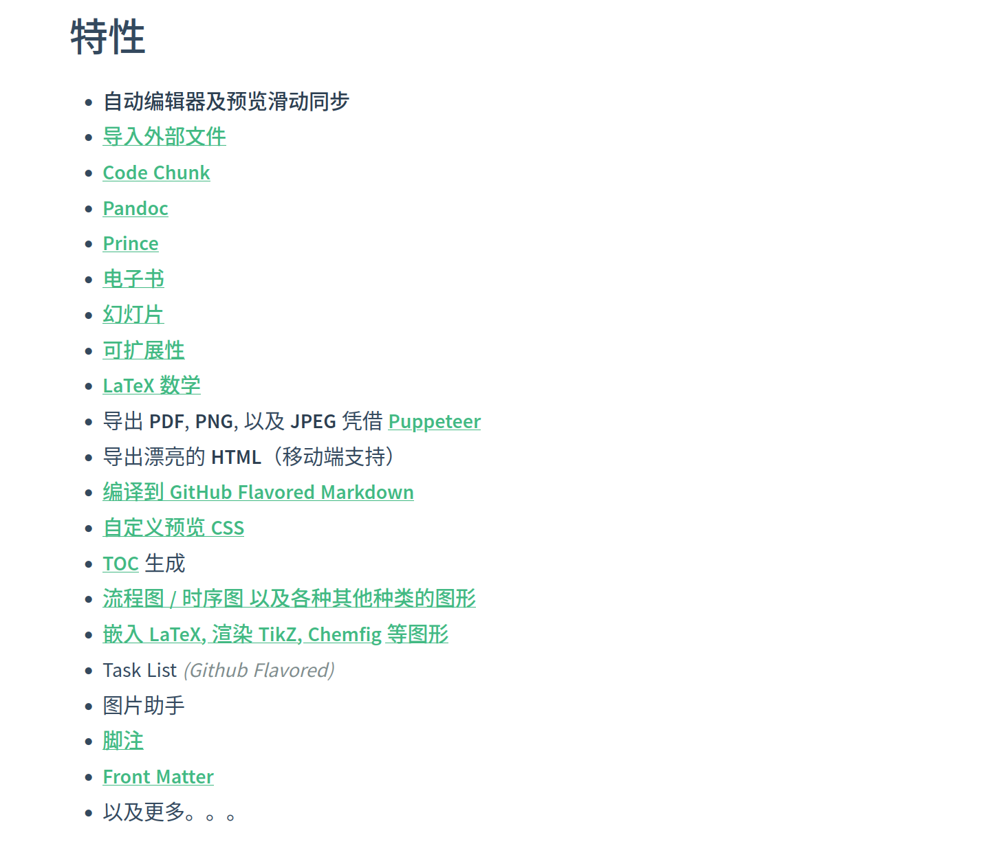

使用MarkDown编写文章
使用MarkDown编写文章
更新日期：2020-07-24
1. 简介
MarkDown是一个轻量级的文本标记语言，允许我们在写文章时使用约定了格式的文本进行排版工作。
以前我曾经在Excel中编写文章，这个工作是很烦躁的，经常鼠标键盘来回切，字体边框来回调。添加删除行列也是需要 经常进行的操作。
使用MarkDown来编写就显得轻松惬意，它主要有如下优点:
- 轻量级
- 跨平台，支持非常广泛
- 语法简洁，学习成本低
- 兼容于Web页面
- 扩展性强
2. 准备工作
大概了解了MarkDown之后，我们就可以马上着手编写文章了。为了使我们的工作能顺利进行，要提前安装好一些工具。
2.1 选择编辑器
所谓工欲善其事必先利其器，虽然使用Windows记事本这类的应用就能够编写所有内容，但是效率比较低。
我推荐的工具是Visual Studio Code（简称为VS Code），它的强大用过它的人都懂。对于编写MarkDown来说使用这个工具有如下好处:
- 跨桌面平台支持（Windows、Linux和Mac OSX）
- 内置命令行，并可以通过扩展来内置各种工具，不用来回切换
- 可通过扩展来支持各种编程语言，能作为一个轻量级IDE使用
- 可以实时预览MarkDown
- 轻量级，打开极快，丝滑流畅
- 扩展性强，可以方便的下载各种插件加强MarkDown功能
也就是说Visual Studio Code基本上可以胜任你所有的文本编辑和编码工作，那些大型IDE，各种启动缓慢的大型 工具你都可以不用打开了。它可以一个人包打天下。
Visual Studo Code的安装，可以直接在微软官网下载安装包，是完全开源免费的。
下载安装之后，创建一个文件，扩展名改为.md。VS Code就可以自动将其识别为MarkDown文件了。
2.2 安装常用插件
2.2.1 语言支持插件
VS Code是内置支持MarkDown语言的，但我们可能还想要什么高亮显示，语法检查,关键词自动补全之类的功能。
而所有这些都可以在VS Code的扩展应用市场中找到。自己慢慢挑就好。
2.2.2 预览插件
VS Code默认支持MarkDown的预览，可以像上图中右侧窗口那样左边编写右边预览，这样编辑器就可以所见即所得了。在左边敲字，右边就实时显示出它渲染后的样子了，是不是很Cooooool。
在扩展商店搜MarkDown Preview Enhanced这个插件并安装后可以大幅增强MarkDown的功能，下图中列举了它的一些特性。
官方文档：特性一览 
3. 语法示例
3.1 标题和列表
要定义标题很简单。使用#加空格开头即可
如：
1 2 3 4 5 6 | |
要定义列表也非常容易，使用+ - * 中的一种加上一个空格开头就可以：
1 2 3 4 5 6 | |
显示效果
- this is a list
- this is a small one
- smaller one
- smaller tow
- this is another small one
- this is a small one
- this is another list
使用三种符号中的哪种都一样，全凭你的喜好。一般而言主要用来区分层次关系，不同层次分别使用不同的符号。
Warning
在有的MarkDown实现上，没法识别出这种嵌套的list效果。
3.2 分隔线
使用一行----------------------------就可以了。下划线也可以。
但是不知道为啥渲染成HTML或者PDF之后下划线有可能会消失。
3.3 文字效果
| No. | 效果 | 编写格式 | 显示效果 |
|---|---|---|---|
| 1 | 斜体 | _我是斜体_ |
我是斜体 |
| 2 | 粗体 | __我是粗体__ |
我是粗体 |
| 3 | 粗斜体 | ___我是粗斜体___ |
我是粗斜体 |
| 4 | 删除线 | ~~删除内容~~ |
|
| 5 | 下划线 | <u>下划线</u> |
下划线 |
其中粗体和斜体使用前后加下划线_来表示。下划线由于MarkDown并不支持，所有直接使用HTML标签来解决，后面我们再介绍HTML标签的使用。
3.4 图片
1 | |
但是这个语法无法指定图片样式，需要指定样式时可以使用img标签来代替。
例子：指定图片大小
1 | |
3.5 表格
表格使用多个|||来表示：
1 2 3 4 5 6 7 | |
显示效果：
| 效果 | 编写格式 | 显示效果 |
|---|---|---|
| 斜体 | _我是斜体_ |
我是斜体 |
| 粗体 | __我是粗体__ |
我是粗体 |
| 粗斜体 | ___我是粗斜体___ |
我是粗斜体 |
| 删除线 | ~~删除内容~~ |
|
| 下划线 | <u>下划线</u> |
下划线 |
这个表格的边框样式是我自定义的，默认是四向带边框的。
在第二行使用了|:-------|的形式来区分表头和表身，:用来指定对齐方式：
|:-------|左对齐|-------:|右对齐|:------:|居中
3.6 代码块
作为软件攻城狮，我们免不了要在写文章的时候加入代码。其实在前面演示MarkDown语法的时候我已经使用过了。要插入一段代码可以使用三个`来表示，比如：
1 2 3 4 | |
通过指定语言种类可以高亮显示该语言的关键字。比如可以指定java, lua, c++等，据我所知这个功能支持几乎任何语言:
Java
1 2 3 4 5 | |
Lua
1 2 3 | |
C++
1 2 3 4 5 6 7 8 | |
3.7 页面内跳转
页面内跳转的写法和显示图片有点像：
1 2 3 4 | |
可以看到，是通过使用HTML标签并指定ID来跳转的。
3.8 内置HTML
有时候我们想要的格式没有办法通过MarkDown的语法来实现，那我们怎么办呢。作为软件攻城狮自然对HTML再熟悉不过了。而HTML的所有标签可以直接拿来在MarkDown里直接使用。
比如上面使用过的<u></u> <h3></h3>等。这些标签的用法完全和在HTML文件中使用时一模一样，可以自己指定style来达到想要实现的显示效果。
4. 输出为其它格式
4.1 使用的插件
在扩展应用市场中搜MarkDown PDF，有了这个插件，我们就可以转换成多种常见格式。如：
- PNG
- HTML
4.2 在浏览器中查看
在MarkDown Preview Enhanced的预览窗口中点右键，可以选择Open In Browser命令，就可以直接弹出浏览器窗口直接查看渲染为HTML的效果。这个过程不需要我们提前进行转换操作。MarkDown格式本身是与HTML良好兼容的。
5. 复杂用法
5.1 自定义样式表CSS
作为一个熟悉前端开发的软件攻城狮，对显示样式上的问题一般都是难以容忍的。MardDown提供的样式虽然可以满足我们大部分情况下的需求，但某些时候我们希望做进一步调整。
此时可以通过修改MarkDown Preview Enhanced的样式表CSS文件来实现。
如何打开这个CSS样式表文件?
在VS Code中按下F11，调出命令执行菜单，选择Customize CSS。

打开之后就是我们熟悉的CSS文件了。因为MarkDown文件是要渲染成HTML文件的，所以通过查看生成的HTML文件里面的元素，就可以在这里随意设定你想要的样式。
比如## 标题2会被渲染成<H2>标题2</H2>，通过在CSS中指定H2的样式，就可以改变所有## 二级标题的显示效果。
下图是我的样式表：
1 2 3 4 5 6 7 8 9 10 11 12 13 14 15 16 17 18 19 20 21 22 23 24 25 26 27 28 29 30 31 | |
5.2 绘制UML图
可以通过GraphViz插件来支持画图。
5.3 自动生成目录
在扩展商店中下载MarkDown TOC插件，然后再编辑器中把光标移动到你想插入目录的地方点右键，选择Markdown TOC: Insert/Update菜单。目录就自动生成出来了。
生成规则也很简单，是根据你设定的6级标题来生成，并自动设定跳转。
但是有时候生成出来的代码格式很奇怪，不会自动换行。如下所示：
1 | |
此时，可以修改设定，使自动生成代码时使用\n来填充，而不是auto：
在设置里搜Eol来修改。
在mkdocs下，并不能识别这样生成的目录，它有一套自己的目录生成规则，会在渲染出的页面上自动生成目录，不需要我们做任何事情。